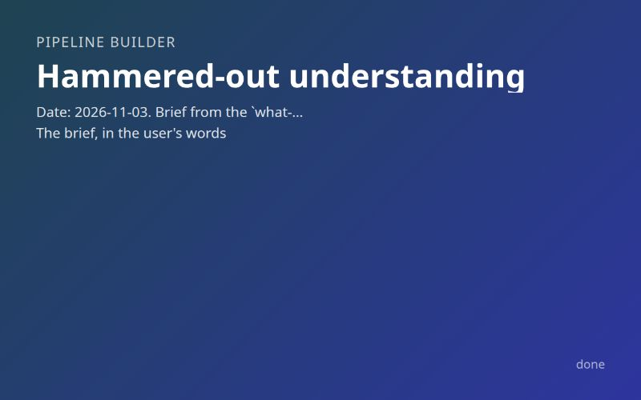

Inputs
- What do you want from this pipeline?
- Please design a pipeline that can build and design a database driven system where I can send and recieve messages from the database as sms messagese, and other entities like cli AI instances can recieve events or poll the database and understand the conversation. It should be very secure, cheap. All stages should have collegial style flowing prose that treats them like valued developers and trusts them to understand extreme specifity of nouns and adjectives of the discipline, and there should be research stages embedded into the planning data/gathering at the beginning of the pipeline, and it should evaluate what's on this machine
Starred outputs
This run has no starred output present.
Questions and answers
-
Confirm with the user asked · answered ·
Which SMS carrier path should the system be built on? (Found on this machine: claude-sms-tool supports Textbelt and Android SMS Gateway; the voip project used Telnyx.)
Let research decide (Recommended)
-
Confirm with the user asked · answered ·
Where should the database live? This sets both the cost floor and the security boundary, and it decides how a carrier webhook reaches it.
Let research decide (Recommended)
-
Confirm with the user asked · answered ·
How should the new system relate to the existing claude-sms-tool repo (~/Desktop/dev/claude-sms-tool: sms, sms-inbox, sms-threads follow, sms-log, sms-dash; JSONL journal; not currently configured)?
Fresh repo, mine it for ideas (Recommended)
-
Confirm with the user asked · answered ·
Who is on the far end of the texts? This decides the security model: a single trusted number is an allowlist of one; several people means consent, STOP/HELP handling, per-contact permissions, and US A2P registration become part of the design.
Just my own phone (Recommended)
-
Confirm with the user asked · error ·
How far should the pipeline go in one run? 'Build' can mean code plus tests, or it can mean the thing is live and a text has actually gone round-trip.
(error)
-
Confirm with the user asked · answered ·
Final check of my understanding. The pipeline builds, in a fresh repo, a secure and cheap database-backed SMS system: your phone (one allowlisted number) texts a number and the texts land as rows; anything on this machine can insert a row and it goes out as a text; CLI AI instances (Claude Code sessions and the like) either subscribe to an event feed or poll the database and can read whole conversations with enough structure to understand them. Carrier and database are chosen by research stages that run first, alongside a stage that inventories this machine and one that mines claude-sms-tool and the voip project for ideas. Every stage prompt is collegial, flowing prose that trusts the stage with precise discipline vocabulary. The run ends with code, local tests against fakes, a security review, and a runbook for the live steps you do yourself; no stage touches accounts, payments, or real secrets. Is that right?
Yes, build it
Other outputs
| Stage | Group | Status | Model | Duration | Tokens |
|---|---|---|---|---|---|
| Confirm with the user | kwwtgqp | done | fable | 6 h 11 min | 721K |
| Tester | kz3ofpv | done | default | 5 h 18 min | 12.9M |
| Analyzer | kwn1sne | done | default | 9 min 01 s | 5.6M |